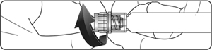

|
 |
| ФЛЕКСОТРОН® ФОРТЕ (FLEXOTRON® FORTE) имплантат вязкоэластичн. стерильный д/внутрисуставных инъекц. | ||||||||
|
Номер и дата регистрации: РЗН 2022/17365 от 27.05.22 Групповая принадлежность: Медицинское изделие для лечения заболеваний костно-мышечной системы |
Владелец регистрационного удостоверения: зарегистрировано Представительство: | |||||||
Форма выпуска, состав и упаковка Имплантат вязкоэластичный стерильный для внутрисуставных инъекций в виде бесцветного, прозрачного, однородного, вязкого, апирогенного геля (гидрогеля) с отсутствием помутнения, кристаллизации, инородных включений.
Вспомогательные вещества (солевой раствор фосфатного буфера): натрия гидрофосфата додекагидрат (Na2HPO4×12H2O) - 0.06%, натрия дигидрофосфата дигидрат (NaH2PO4×2H2O) - 0.0048%, натрия хлорид - 0.89%, вода д/и - сколько требуется до 100% (3 мл). Имплантат не включает в себя лекарственные средства, производные клеток и тканей человека, ткани животных. Не имеет радиационных и электромагнитных свойств. 3 мл - шприцы стеклянные (1) - блистеры (1) с имплантационными стикерами (3 шт.) - коробки картонные. | ||||||||
| ||||||||
Описание препарата основано на официально утвержденной инструкции по применению и утверждено компанией-производителем для издания 2023 г. | ||||||||
Свойства |
Область применения |
Рекомендации по применению |
Побочное действие |
Противопоказания |
Беременность и лактация |
Особые указания |
Передозировка |
Лекарственное взаимодействие |
Условия хранения и сроки годности |
Условия реализации
Свойства
Имплантат Флексотрон® Форте представляет собой медицинское изделие для внутрисуставных инъекций на основе гиалуроната натрия. В 1 мл продукта содержится 10 мг натрия гиалуроната, растворенного в физиологическом растворе. Гиалуроновая кислота (молекулярная масса 650000-1200000 Да) является продуктом бактериальной ферментации. Гиалуроновая кислота принадлежит к небольшой группе веществ, одинаковых для всех живых организмов, поэтому она обладает высокой биосовместимостью. Гиалуроновая кислота является естественным полисахаридом, который входит в состав всех тканей организма, при этом в особенно большой концентрации гиалуроновая кислота содержится в коже, подкожных тканях, а также в соединительной ткани, такой как синовиальная жидкость. Молекула гиалуроновой кислоты имеет спиральную длинноцепочечную структуру, которая позволяет удерживать или поглощать молекулы воды. Внутрисуставное обогащение синовиальной жидкости инъекциями гиалуроната натрия способствует улучшению или восстановлению вязкоупругих свойств естественной синовиальной жидкости. Гиалуронат натрия отвечает за вязкоупругие свойства синовиальной жидкости, таким образом вязкоэластичное протезирование позволяет компенсировать недостаточность гиалуроновой кислоты в синовиальной жидкости или снижение ее вязкости, смягчить внешние нагрузки на сустав, обеспечивает смазывание, восстановление упругости и вязкости, амортизацию, увлажнение и обволакивание суставных поверхностей, покрывая смазывающим защитным слоем хрящ и рецепторы синовии. Это помогает увеличить объем движений и обеспечивает механическую защиту тканей полости сустава, что в свою очередь может улучшать течение остеоартроза/остеоартрита и других дегенеративно-дистрофических и посттравматических патологических изменений суставов. Флексотрон® Форте не подлежит техническому обслуживанию. Область применения
Рекомендации по применению
Инъекции выполняются медицинскими специалистами в асептических условиях процедурных и манипуляционных кабинетов. Перед введением имплантата содержимое шприца должно быть визуально оценено на прозрачность и однородность. Помутнение, кристаллизация, появление окраски и/или инородных включений может свидетельствовать о нарушении правил транспортировки и хранения изделия. При появлении вышеуказанных признаков введение средства для замещения синовиальной жидкости запрещено. Имплантат вводится внутрисуставно в асептических условиях. Вводят в объеме, содержащемся в 1 шприце (3 мл). Для лечения остеоартрита/остеоартроза суставов у взрослых проводят 1 инъекцию в неделю. На курс лечения рекомендуется 3-5 шприцев. Количество и частота инъекций могут изменяться в зависимости от тяжести симптоматики. Ожидаемая продолжительность эффекта составляет 6 месяцев после проведения курса лечения. Перед проведением инъекции необходимо: 1. Удалить покрывающую мембрану и извлечь наполненный шприц с имплантатом из блистера. 2. Вручную прикрепить адаптер для пальцев к упору цилиндра шприца. 3. Придерживая люэровский наконечник, аккуратно открутить колпачок наконечника шприца (как показано ниже). Избегать чрезмерных нагрузок на шприц при фиксации иглы для предотвращения деформации механизма Луер-Лок.  4. Продолжая крепко удерживать люэровский наконечник, прикрутить стерильную иглу рекомендуемым размером 21G или 23G (не входят в комплект поставки) к защелке шприца до тех пор, пока она не будет закреплена. Длина иглы выбирается врачом в соответствии с конституцией человека и толщиной подкожной клетчатки в месте пункции. 5. Перед инъекцией выпустить из шприца пузырьки воздуха в случае их наличия. Вводить медленно. Пациент должен избегать любых физических нагрузок или весовых нагрузок в течение 48 часов после внутрисуставной инъекции. Побочное действие
Применение внутрисуставных форм гиалуроновой кислоты при дегенеративно-дистрофических и посттравматических поражениях суставов является хорошо изученным методом с установленным профилем безопасности, применяющимся на протяжении нескольких десятилетий. К основным побочным эффектам относятся боль, отек и скованность в суставе после инъекции. Крайне редко - возможно проявление местных воспалительных симптомов (повышение температуры, покраснение и отечность, увеличение содержания экссудата в полости сустава). Обратимые местные реакции - кратковременное ограничение подвижности, чувство дискомфорта или тяжести в суставе. Проявление данных симптомов можно уменьшить прикладыванием льда к месту инъекции в течение 5-10 минут. В единичных случаях отмечалось развитие аллергических реакций (зуд, сыпь, крапивница) и анафилактических реакций, септического артрита, внутритканевых кровоизлияний или кровоизлияний в полость сустава, тендинитов, флебитов, парестезий, головокружений, головных болей, мышечных спазмов, чувства жара, общего недомогания, периферических отеков при внутрисуставном введении растворов гиалуроновой кислоты. При появлении местных или общих симптомов следует проконсультироваться с врачом. Противопоказания
Применение при беременности и кормлении грудью
При беременности имплантат применяют только в том случае, если ожидаемый положительный терапевтический эффект превосходит негативное влияние побочных эффектов. В период лечения кормящим женщинам необходимо прервать грудное вскармливание. Особые указания
Медицинское изделие предназначено для внутрисуставного введения. Необходимо избегать введения имплантата в кровеносные сосуды и окружающие ткани. По причине того, что септический артрит является серьезным побочным эффектом, необходимо соблюдать все стандартные меры предосторожности для хирургических вмешательств. При получении аспирационной жидкости перед проведением вязкоэластичного протезирования следует провести соответствующие исследования для исключения бактериальной этиологии артрита. Применять с осторожностью у пациентов с аллергией, а также у пациентов с заболеваниями печени. В первые дни после инъекции может быть рекомендован пероральный прием анальгетиков или противовоспалительных лекарственных средств. Продукт предназначен только для одноразового применения. Проходит финишную стерилизацию автоклавированием. Повторная стерилизация и применение изделия запрещены по причине наличия риска возникновения инфекции, перекрестной инфекции и/или дефекта изделия. Не использовать шприц из открытой и/или поврежденной стерильной упаковки. Не использовать шприц с открытым или поврежденным колпачком стерильного шприца. При нарушении стерильности или подозрении о нарушении стерильности имплантата изделие должно быть утилизировано. Пожилые пациенты У пациентов пожилого возраста применять с осторожностью ввиду общего снижения функциональной активности органов и систем организма. Использование в педиатрии Безопасность применения имплантата у детей изучена недостаточно, поэтому применять с осторожностью. Извлечение имплантата В случае выраженных проявлений может быть рекомендовано удаление имплантата из полости сустава, в т.ч. с применением лаважа, согласно действующим клиническим рекомендациям. Запрещаются повторные инъекции имплантатов синовиальной жидкости в сустав до купирования симптомов острого воспаления. Защита окружающей среды и утилизация Содержание шприца не является токсичным или огнеопасным. Изделия при использовании, транспортировке и хранении не оказывают негативного воздействия на окружающую среду. Неиспользованные шприцы могут быть утилизированы в качестве бытовых отходов. Стекло следует утилизировать с осторожностью. Неиспользованное содержимое шприца до или после истечения срока годности может быть утилизировано в качестве бытовых отходов (слить с большим количеством воды). Уничтожение использованных медицинских изделий осуществляется в соответствии с природоохранными требованиями национальных, местных и ведомственных руководящих положений о безопасном уничтожении и утилизации. В соответствии с санитарно-эпидемиологическими правилами и нормативами СанПиН 2.1.7.2790-10 использованные медицинские изделия (шприцы с имплантатами) относятся к медицинским отходам класса Б (эпидемиологически опасные отходы). Лекарственное взаимодействие
Применение изделия совместно с четвертичными соединениями аммония запрещено. |
||||||||
Вернуться наверх |
||||||||
Copyright © Справочник Видаль «Лекарственные препараты в России», Москва, Россия